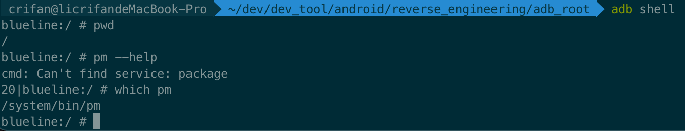
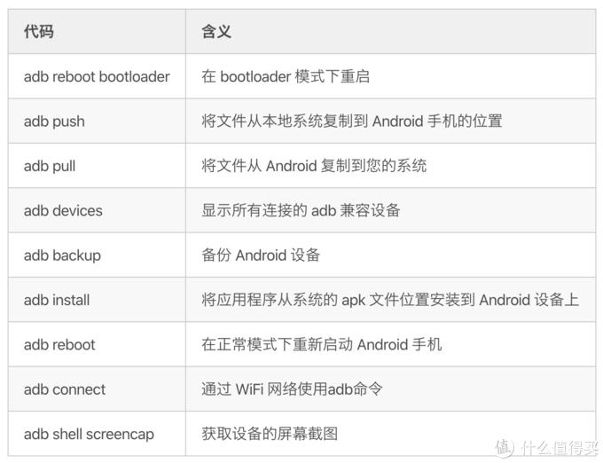
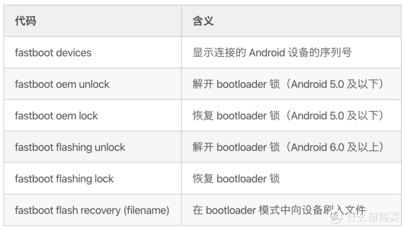

adb
TODO：
- 【整理】adb命令语法帮助信息
- 【已解决】Mac中运行adb shell无需su超级用户即可正常运行输出结果
- 【未解决】尝试解决adb只有su超级用户权限才能工作：adb版本
- 【已解决】Android Studio和安卓设备Google Pixel3重启后adb shell再次异常：只有su超级用户权限才能正常运行命令
- 【已解决】尝试解决adb没有su超级用户权限无法运行子命令：ps进程相关
- 【已解决】Android Studio中对于ADB：Use existing manually managed server且指定adb端口
- 【已解决】Mac中给adb start-server指定端口
- 【已解决】Mac中adb shell子命令运行卡死无响应
- 【已解决】安卓手机adb shell报错：Can't find service
- 【已解决】安卓手机Google Pixel3中adb命令pm运行报错：cmd Can't find service: package
- 【已解决】安卓手机adb shell service list报错：Found 0 services
- 【已解决】安卓手机adb shell无法直接运行命令但是进入shell后su后却可以
- 【已解决】adb shell带su超级用户权限去运行子命令
- 【未解决】pm安装重签名的apk报错：Failure INSTALL_FAILED_UPDATE_INCOMPATIBLE
- 【已解决】pm安装apktool重新打包的apk报错：Failure INSTALL_PARSE_FAILED_NO_CERTIFICATES
- 【无需解决】安卓手机pm卸载app报错：Failure DELETE_FAILED_INTERNAL_ERROR
- 【已解决】安卓手机中用adb shel中的pm去安装YouTube的apk
- 【已解决】安卓手机Google Pixel3中用pm安装YouTube的apk报错：Failure INSTALL_FAILED_VERSION_DOWNGRADE
用adb安装apk
adb install xxx.apk=adb push xxx.apk somePath+pm install /somePath/xxx.apk
举例：
crifan@licrifandeMacBook-Pro ~/dev/dev_tool/android/EdXposed pwd
/Users/crifan/dev/dev_tool/android/EdXposed
crifan@licrifandeMacBook-Pro ~/dev/dev_tool/android/EdXposed ll
total 8224
crifan@licrifandeMacBook-Pro ~/dev/dev_tool/android/EdXposed adb install EdXposedManager-4.6.2-46200-org.meowcat.edxposed.manager-release.apk
Performing Streamed Install
Success
adb shell
命令提示符
adb shell进入shell后：
- 命令行提示符
#=井号：root用户$=美元符号：普通用户
另外，也可以通过：
whoami
查看当前用户是什么
举例：
- root用户
blueline:/ # whoami
root
- 普通用户：
shell
13|blueline:/ $ whoami
shell
adb shell命令行前面的数字
正常情况，shell前面是没有数字的：
adb shell
blueline:/ # pwd
/
但是，如果前面出现一个数字加上竖杠，则表示：前一次命令执行的返回值，前一个命令运行出错了的出错码
比如：
blueline:/ # pm --help
cmd: Can't find service: package
20|blueline:/ #
此处的 20| 就是前一个命令运行出错的返回值=出错码
而继续运行，如果后续命令正常运行，则出错码就消失了：
20|blueline:/ # which pm
/system/bin/pm
blueline:/ #
其实表示的是：
- 上一个命令运行结果=返回值
0：表示没有出错- 所以就不显示出错码
非0：就显示，提示你出错了

adb常见命令

- 相关
- 常用 Fastboot 命令
- 
- 常用 Fastboot 命令
adb语法
> adb --help
Android Debug Bridge version 1.0.41
Version 33.0.2-8557947
Installed as /Users/crifan/dev/dev_tool/android/AndroidSDK/platform-tools/adb
global options:
-a listen on all network interfaces, not just localhost
-d use USB device (error if multiple devices connected)
-e use TCP/IP device (error if multiple TCP/IP devices available)
-s SERIAL use device with given serial (overrides $ANDROID_SERIAL)
-t ID use device with given transport id
-H name of adb server host [default=localhost]
-P port of adb server [default=5037]
-L SOCKET listen on given socket for adb server [default=tcp:localhost:5037]
--one-device SERIAL|USB only allowed with 'start-server' or 'server nodaemon', server will only connect to one USB device, specified by a serial number or USB device address.
--exit-on-write-error exit if stdout is closed
general commands:
devices [-l] list connected devices (-l for long output)
help show this help message
version show version num
networking:
connect HOST[:PORT] connect to a device via TCP/IP [default port=5555]
disconnect [HOST[:PORT]]
disconnect from given TCP/IP device [default port=5555], or all
pair HOST[:PORT] [PAIRING CODE]
pair with a device for secure TCP/IP communication
forward --list list all forward socket connections
forward [--no-rebind] LOCAL REMOTE
forward socket connection using:
tcp:<port> (<local> may be "tcp:0" to pick any open port)
localabstract:<unix domain socket name>
localreserved:<unix domain socket name>
localfilesystem:<unix domain socket name>
jdwp:<process pid> (remote only)
vsock:<CID>:<port> (remote only)
acceptfd:<fd> (listen only)
forward --remove LOCAL remove specific forward socket connection
forward --remove-all remove all forward socket connections
ppp TTY [PARAMETER...] run PPP over USB
reverse --list list all reverse socket connections from device
reverse [--no-rebind] REMOTE LOCAL
reverse socket connection using:
tcp:<port> (<remote> may be "tcp:0" to pick any open port)
localabstract:<unix domain socket name>
localreserved:<unix domain socket name>
localfilesystem:<unix domain socket name>
reverse --remove REMOTE remove specific reverse socket connection
reverse --remove-all remove all reverse socket connections from device
mdns check check if mdns discovery is available
mdns services list all discovered services
file transfer:
push [--sync] [-z ALGORITHM] [-Z] LOCAL... REMOTE
copy local files/directories to device
--sync: only push files that are newer on the host than the device
-n: dry run: push files to device without storing to the filesystem
-z: enable compression with a specified algorithm (any/none/brotli/lz4/zstd)
-Z: disable compression
pull [-a] [-z ALGORITHM] [-Z] REMOTE... LOCAL
copy files/dirs from device
-a: preserve file timestamp and mode
-z: enable compression with a specified algorithm (any/none/brotli/lz4/zstd)
-Z: disable compression
sync [-l] [-z ALGORITHM] [-Z] [all|data|odm|oem|product|system|system_ext|vendor]
sync a local build from $ANDROID_PRODUCT_OUT to the device (default all)
-n: dry run: push files to device without storing to the filesystem
-l: list files that would be copied, but don't copy them
-z: enable compression with a specified algorithm (any/none/brotli/lz4/zstd)
-Z: disable compression
shell:
shell [-e ESCAPE] [-n] [-Tt] [-x] [COMMAND...]
run remote shell command (interactive shell if no command given)
-e: choose escape character, or "none"; default '~'
-n: don't read from stdin
-T: disable pty allocation
-t: allocate a pty if on a tty (-tt: force pty allocation)
-x: disable remote exit codes and stdout/stderr separation
emu COMMAND run emulator console command
app installation (see also `adb shell cmd package help`):
install [-lrtsdg] [--instant] PACKAGE
push a single package to the device and install it
install-multiple [-lrtsdpg] [--instant] PACKAGE...
push multiple APKs to the device for a single package and install them
install-multi-package [-lrtsdpg] [--instant] PACKAGE...
push one or more packages to the device and install them atomically
-r: replace existing application
-t: allow test packages
-d: allow version code downgrade (debuggable packages only)
-p: partial application install (install-multiple only)
-g: grant all runtime permissions
--abi ABI: override platform's default ABI
--instant: cause the app to be installed as an ephemeral install app
--no-streaming: always push APK to device and invoke Package Manager as separate steps
--streaming: force streaming APK directly into Package Manager
--fastdeploy: use fast deploy
--no-fastdeploy: prevent use of fast deploy
--force-agent: force update of deployment agent when using fast deploy
--date-check-agent: update deployment agent when local version is newer and using fast deploy
--version-check-agent: update deployment agent when local version has different version code and using fast deploy
--local-agent: locate agent files from local source build (instead of SDK location)
(See also `adb shell pm help` for more options.)
uninstall [-k] PACKAGE
remove this app package from the device
'-k': keep the data and cache directories
debugging:
bugreport [PATH]
write bugreport to given PATH [default=bugreport.zip];
if PATH is a directory, the bug report is saved in that directory.
devices that don't support zipped bug reports output to stdout.
jdwp list pids of processes hosting a JDWP transport
logcat show device log (logcat --help for more)
security:
disable-verity disable dm-verity checking on userdebug builds
enable-verity re-enable dm-verity checking on userdebug builds
keygen FILE
generate adb public/private key; private key stored in FILE,
scripting:
wait-for[-TRANSPORT]-STATE...
wait for device to be in a given state
STATE: device, recovery, rescue, sideload, bootloader, or disconnect
TRANSPORT: usb, local, or any [default=any]
get-state print offline | bootloader | device
get-serialno print <serial-number>
get-devpath print <device-path>
remount [-R]
remount partitions read-write. if a reboot is required, -R will
will automatically reboot the device.
reboot [bootloader|recovery|sideload|sideload-auto-reboot]
reboot the device; defaults to booting system image but
supports bootloader and recovery too. sideload reboots
into recovery and automatically starts sideload mode,
sideload-auto-reboot is the same but reboots after sideloading.
sideload OTAPACKAGE sideload the given full OTA package
root restart adbd with root permissions
unroot restart adbd without root permissions
usb restart adbd listening on USB
tcpip PORT restart adbd listening on TCP on PORT
internal debugging:
start-server ensure that there is a server running
kill-server kill the server if it is running
reconnect kick connection from host side to force reconnect
reconnect device kick connection from device side to force reconnect
reconnect offline reset offline/unauthorized devices to force reconnect
usb:
attach attach a detached USB device
detach detach from a USB device to allow use by other processes
environment variables:
$ADB_TRACE
comma-separated list of debug info to log:
all,adb,sockets,packets,rwx,usb,sync,sysdeps,transport,jdwp
$ADB_VENDOR_KEYS colon-separated list of keys (files or directories)
$ANDROID_SERIAL serial number to connect to (see -s)
$ANDROID_LOG_TAGS tags to be used by logcat (see logcat --help)
$ADB_LOCAL_TRANSPORT_MAX_PORT max emulator scan port (default 5585, 16 emus)
$ADB_MDNS_AUTO_CONNECT comma-separated list of mdns services to allow auto-connect (default adb-tls-connect)